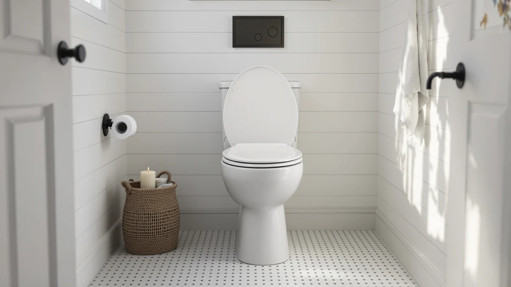

Best Toilet Seat vs Lid (2026) | Best Toilet Seats
Prices and picks verified as of August 2026. Independent, reader-supported reviews.


Things to Know Before You Buy
- The seat is the ring, the lid is the cover. US retailers sell them as one hinged assembly, so a "toilet seat" listing includes both parts.
- Lid-only replacements are hard to find. When a lid cracks, plan on replacing the whole seat-and-lid unit, which runs $15 to $60 for most models.
- Shape decides fit. Round bowls measure about 16.5 inches from the bolt holes to the front rim; elongated bowls measure about 18.5 inches.
- A closed lid is not a step stool. Most lids carry no weight rating, and standing on one is a common way to crack it.
- Close the lid before flushing. Laser imaging studies show a flush sends droplets several feet above an open bowl.
The toilet seat vs lid question sounds trivial until a lid cracks and you discover you cannot buy one without the other. The seat is the oval ring you sit on. The lid is the flat cover that folds down over it, and in the US market the two ship as a single hinged assembly.
That packaging detail matters more than it sounds. Retail listings say toilet seat but mean seat plus lid plus hinges, so a broken lid, a stained ring, and a wobbly hinge all lead to the same purchase. Knowing how the two parts differ helps you pick a replacement that fits your bowl and survives your household.
Expect to spend $15 to $60 on a standard seat-and-lid unit and ten minutes installing it with a screwdriver. The harder part is choosing well: shape, material, and hinge design separate a lid that slams and yellows from one that closes itself and wipes clean for a decade.
What You Need to Know
Plumbers separate the assembly into three parts. The seat is the load-bearing ring, molded with small bumpers underneath that rest on the bowl rim. The lid is the lighter cover hinged behind it. The hinge set, two posts bolted through holes at the back of the bowl, holds both and takes most of the mechanical stress.
In the seat vs lid split, the seat does the structural work. Manufacturers mold it thicker, rate it for body weight, and shape it for comfort. The lid exists to close the bowl: it blocks the flush plume and keeps pets and dropped items out of the water. It also makes the bathroom look finished. Most lids carry no weight rating at all.
That difference explains the retail packaging. A lid without its matching seat has no independent mounting point, since both parts pivot on the same hinge posts. A few large brands stock lid-only spares for their bestsellers, but for most models a cracked lid means a new complete unit. The upside: a complete unit costs little and goes on with two bolts, and swapping it gives you the chance to upgrade the hinge and material while you're at it.
One more distinction worth knowing. Commercial restrooms use open-front seats with no lid, a plumbing-code requirement for public facilities in many US states. Homes use closed-front seats with lids, and residential codes leave the choice to you.
Types and Categories
Standard plastic combos dominate the market. Injection-molded from polypropylene or duroplast, they resist stains, cost the least, and weigh little. Duroplast, a harder thermoset resin, feels closer to ceramic and shrugs off scratches better than basic polypropylene.
Enameled wood seat-and-lid units are the step up from basic plastic. A molded wood core with a baked enamel coat feels warmer in a cold bathroom and sits heavier on the bowl, so the lid closes with a solid sound rather than a rattle. The trade-off: the coating chips over years of cleaning, and chipped spots absorb moisture.
Soft-close mechanisms now appear across both materials. A small damper in the hinge lowers the seat and lid the last few inches on their own, which ends slamming and protects the porcelain. Quick-release hinges pair well with them: press a button and the whole assembly lifts off for cleaning.
Specialty designs solve household problems. Family seats build a magnetic child ring into the lid, so toddlers get a secure fit without a separate potty ring. Night-light units clip an LED to the rim so nobody hunts for a wall switch at 3 a.m. Raised and padded seats help anyone who needs extra height or cushioning, and bidet seats replace the whole assembly with a washing unit.
How to Choose
Start with shape, because a mismatched toilet seat vs lid combination overhangs the bowl or exposes the rim no matter what else it gets right. Put a tape measure on the bolt holes at the back of the bowl and measure to the front rim. About 16.5 inches means a round bowl; about 18.5 inches means elongated. The bolt holes themselves sit 5.5 inches apart on standard US toilets, so you rarely need to check that spread.
Pick material by bathroom, not by price alone. Plastic suits humid, high-traffic bathrooms because it does not absorb moisture. Enameled wood suits a low-humidity powder room, where its weight and warmth register and its coating faces fewer wet cleanups.
Then weigh the lid features, since the lid is where designs differ most. Soft-close costs $10 to $20 over a basic model and pays for itself in silence; households with kids notice the difference the first week. A family lid with a built-in child ring beats a loose potty seat that ends up on the floor. If someone in the house gets up at night, a rim-mounted night light spares them the overhead light.
Check the hinge last. Plastic hinge posts cost less but loosen sooner; metal or fiber-reinforced posts hold torque longer. Quick-release is worth paying for: grime collects fastest around the hinges, and an assembly you can lift off cleans in a third of the time.
Common Mistakes to Avoid
Shoppers weighing toilet seat vs lid options repeat a short list of errors. The most expensive one is ordering a lid alone from a marketplace listing and assuming it will bolt onto an existing seat. Hinge geometry varies by brand and model year, and a near-match lid tends to sit crooked or refuse to close flat. Match the exact model number or replace the full unit.
Shape guesses come second. An elongated seat on a round bowl overhangs the front by two inches and flexes when you sit toward the edge. Measure before ordering, even when the old seat looks round to your eye.
Treating the lid as furniture ranks third. People stand on closed lids to reach shelves and crack them, and the crack spreads each time the lid flexes afterward. Lids also make poor chairs during long bathroom cleanups; most are thin shells with no support in the middle.
Two installation errors round out the list. Overtightening the mounting bolts cracks porcelain or strips plastic threads, so stop at snug plus a quarter turn. Skipping the plastic washers that ship with the bolts lets metal contact porcelain, which chips the bowl around the holes over months of seat movement.
Care and Maintenance
Clean the seat and lid with dish soap, warm water, and a soft cloth. That combination handles skin oils and dried splashes without attacking the surface. Skip abrasive powders and stiff brushes on both materials, and keep bleach away from enameled wood, since it dulls the coating and works into any chip.
Of the whole seat and lid assembly, the hinges need the most attention. Urine and cleaning spray collect around the posts, so pop the quick-release weekly if you have it, or work a cloth around the hinges when you clean the bowl. Check bolt tightness monthly; a seat that shifts sideways wears its bumpers and scratches the porcelain glaze.
Soft-close dampers ask for one habit change: stop pushing. Forcing a soft-close lid down faster than the damper allows wears the mechanism, and a worn damper turns a $40 seat back into a slammer. Let it drop on its own.
Replace the unit when the surface stops coming clean, when a crack appears anywhere, or when the hinges wobble after tightening. Plastic units last five to eight years of daily use; enameled wood often shows chips sooner. A yellowed or scratched surface harbors residue no cleaner reaches, and at $20 to $40 the replacement beats the scrubbing.
Our Top Picks
These three earn a spot alongside this guide: one complete seat-and-lid unit for households that want a full upgrade, and two rim-mounted lights that bolt onto whatever assembly you already own.

Editor's Pick
Quick Flip Toilet Seat with
A complete seat, lid, and hinge assembly with a built-in child seat that flips down when toddlers need it, so one unit covers the whole family.
$54.99
Check Price on Amazon
Best Value
2 Pack Toilet Night Lights
Motion-activated LEDs that clip to the bowl rim under the seat, two to a pack, for midnight trips without the overhead light.
$13.78
Check Price on Amazon
Premium Choice
Toilet Night Light 2Pack by
A two-pack with adjustable colors and a soft glow that fills the whole bowl once the lid goes up.
$9.89
Check Price on AmazonCan you buy a toilet lid without the seat?
Rarely.
Should you close the toilet lid before flushing?
Yes.
Frequently Asked Questions
Can you buy a toilet lid without the seat?
Rarely. A few brands stock lid-only spares for their top sellers, but the lid and seat share the same hinge posts, so most manufacturers sell them as one assembly. If your lid cracked, ordering a complete unit for $15 to $40 beats hunting for an exact-match lid.
Should you close the toilet lid before flushing?
Yes. Laser imaging research shows an open-bowl flush launches droplets several feet into the air, where they settle on toothbrushes and counters. Closing the lid first contains most of that plume, and a soft-close lid makes the habit painless.
Are the toilet seat and lid one piece?
They are two separate pieces joined at the hinges. The seat pivots on the same posts as the lid, which is why retailers package and sell them together as a single unit.
Can you sit or stand on a closed toilet lid?
Sitting on a sturdy lid for a moment holds up in most cases, but manufacturers publish weight ratings for the seat ring, not the lid. Standing on a lid to reach a shelf is the most common way people crack one, and a cracked lid means replacing the whole assembly.
How do I measure for a replacement seat and lid?
Measure from the center of the bolt holes at the back of the bowl to the front rim. Around 16.5 inches calls for a round unit; around 18.5 inches calls for elongated. The bolt spread on standard US toilets is 5.5 inches, so shape is the only measurement that changes between models.
Verdict
The toilet seat vs lid distinction comes down to one structural fact: the seat carries you, the lid covers the bowl, and the hinges bind them into a single purchase. Buy by shape first, material second, and hinge quality third, and treat any cracked or yellowed part as a signal to replace the whole unit rather than chase a matching spare. For households that want one upgrade to show for the research, the Jool Baby Quick Flip earns the Editor's Pick here because it replaces the entire assembly and folds a child seat into the lid, solving two bathroom problems with one set of bolts. Pair it, or whatever unit fits your bowl, with a rim-mounted night light and the lid stops being an afterthought. A $20 to $55 spend and ten minutes with a screwdriver buys a quieter, better-fitting toilet that stays clean longer. That is a strong return on the least glamorous purchase in the house.